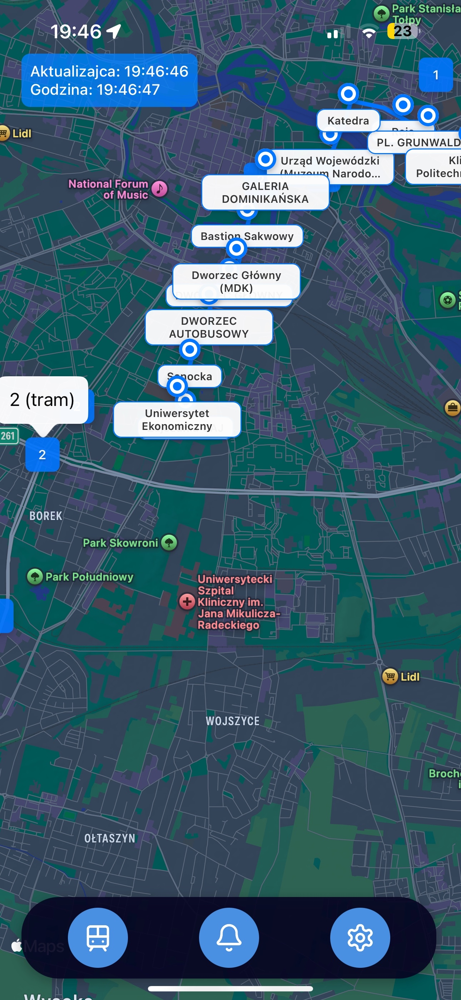
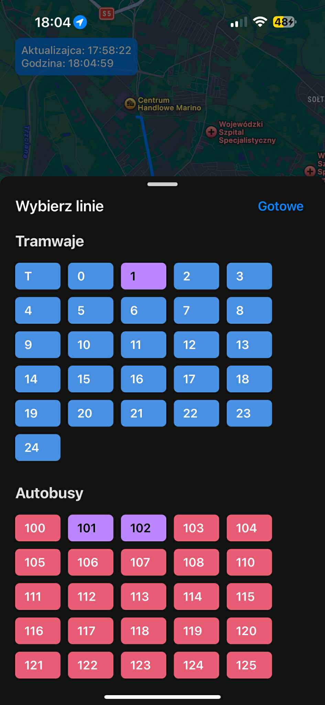

Screenshots


Features
üöå
Real-time Tracking
Live location updates every 10 seconds. Track buses and trams seamlessly across the city.
üöä
Complete Coverage
All transport types supported: trams, day & night buses, express and special lines.
üó∫Ô∏è
Route Visualization
View full route shapes on an interactive map and follow vehicle progress in real-time.
⚠️
Service Alerts
Instant notifications for delays, disruptions, and schedule changes on your routes.
üîÑ
Auto Updates
Seamless background refresh every 10 seconds—never manually reload!
üì±
Mobile Friendly
Designed for mobile devices with a responsive layout and intuitive controls.